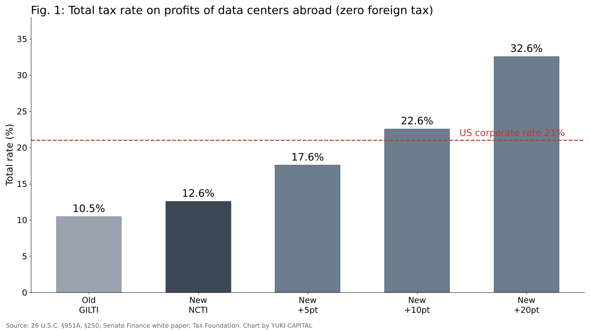
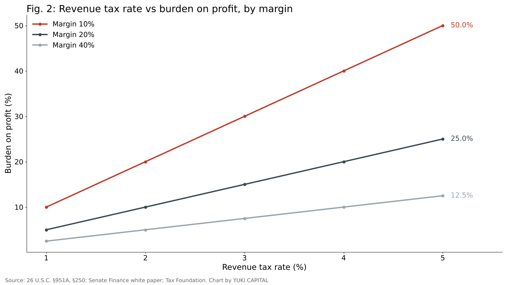

Can the US tax companies that build data centers abroad? Testing President Trump's remarks against Section 951A of the Internal Revenue Code and Senator Wyden's white paper
On November 20, 2026 (US time), President Trump said at a press conference that he intends to impose a huge tax on US companies that build data centers outside the United States [7]. He did not say how the tax would work or what law it would rest on.
That same week, AI-related stocks fell sharply in the US, Japan, Taiwan and Korea. If taxes start to depend on where equipment sits, the hyperscalers' investment plans, worth hundreds of billions of dollars a year, could change.
The question of this article: is there already a mechanism for taxing data centers abroad, and could a new tax make building abroad less attractive than building at home?

- Profits of foreign subsidiaries already bear US tax at an effective 12.6% as "net CFC tested income" (formerly GILTI). The gap with the 21% domestic corporate rate is 8.4 points; a surcharge above 8.4 points removes the tax advantage of building abroad.
- The proposals in Congress (Senators Warner and Wyden) go the other way: they remove incentives for new data centers inside the United States, not abroad.
- A tax on revenue hits low-margin companies hardest. A 4% revenue tax equals 40% of profit for a company with a 10% margin. The form of the tax decides who loses.
Question and background
The US corporate tax rate is 21%. When a US company sets up a subsidiary abroad and earns profits there, those profits fall under foreign tax. US tax law calls such a subsidiary a "controlled foreign corporation (CFC)": a foreign corporation in which US shareholders own more than 50% of the vote or value [3].
The 2017 tax reform introduced a mechanism that taxes CFC profits in the US every year. This is GILTI, "global intangible low-taxed income" [3]. A US corporate shareholder could deduct 50% of that income, so the effective rate was 21% × 50% = 10.5% [4][5].
The tax law enacted in July 2025 (H.R.1) renamed GILTI "net CFC tested income (NCTI)" and cut the deduction to 40% [5][6]. From 2026 the effective rate is 21% × 60% = 12.6%. The "tangible asset" carve-out, which excluded 10% of the book value of foreign plants and equipment from income, was also removed [8].
A data center is a block of tangible assets. Under the old rules, profit equal to 10% of the book value of equipment built abroad was tax-free. That exemption is gone, so the profits of data centers abroad are already taxed more heavily than before.
Congress, meanwhile, is debating something else. In July 2026 Senator Warner introduced a bill that would deny full expensing for AI data center equipment [2]. In August the Democratic staff of the Senate Finance Committee released a white paper proposing a tax at a "low single-digit" rate on data center revenue [1]. Both target new data centers inside the United States.
Two terms first. "Full expensing" lets a company deduct the full cost of equipment in the year it buys it, instead of spreading it over many years. "Hyperscalers" are the large companies that own giant data centers and sell cloud and AI services worldwide, such as Amazon, Microsoft, Google and Meta. Losing full expensing does not change total tax, but it brings payments forward.
The white paper has a single line on data centers abroad. Data centers outside the US serving the US market "need further consideration," and data centers in space that sell to US customers would be taxed, with withholding on payments [1]. A tax aimed at foreign locations has no shape yet, even in Congress.
Data and method
The sources are Sections 951A (inclusion of CFC income) and 250 (deduction) of the Internal Revenue Code [3][4], the text of the 2025 tax law [9], the IRS description of Form 8992 [10], the Senate Finance Committee white paper [1] and the Tax Foundation's estimates [2]. Accounting firms' commentary [5][6][8] was used to check how the provisions read.
The first calculation is the effective US tax rate on the profits of a data center abroad. The formula is "21% corporate rate × (1 − deduction share)", with a deduction share of 50% under the old rules and 40% under the new. Foreign taxes paid can be credited, but under the new rules only up to 90% [5].
The second calculation treats the president's "huge tax" as a surcharge s on the profits of data centers abroad. The total rate abroad is "12.6% + s" against 21% at home, with s set at 0, 5, 10 and 20 points.
The third calculation converts the white paper's revenue tax into a burden on profit. With a revenue tax rate g and a profit margin m, the burden on profit is g ÷ m. I vary g from 1% to 5% and m at 10%, 20% and 40%.
Results
The US tax on profits of data centers abroad rose from 10.5% under the old rules to 12.6% under the new. The rate rose by 2.1 points, and because the tangible asset carve-out is gone, the taxable income itself grows for equipment-heavy data centers. The gap with the 21% domestic rate has narrowed from 10.5 points to 8.4 points.
| Case | Total rate abroad | Gap vs domestic (21%) |
|---|---|---|
| Old rules (GILTI, 50% deduction) | 10.5% | −10.5 pts |
| New rules (NCTI, 40% deduction) | 12.6% | −8.4 pts |
| New rules + 5-pt surcharge | 17.6% | −3.4 pts |
| New rules + 10-pt surcharge | 22.6% | +1.6 pts |
| New rules + 20-pt surcharge | 32.6% | +11.6 pts |
For scale: Goldman Sachs projects 2026 AI-related capital spending by a few large US companies at $581 billion [2]. If a tenth of that were built abroad and earned profit equal to 10% of the investment, the profit would be about $5.8 billion. A 10-point surcharge would raise about $580 million in extra US tax.
Once the surcharge exceeds 8.4 points, the tax advantage of building abroad disappears. Put the other way, it takes not a "huge" tax but a surcharge of about 10 points to equalize taxes at home and abroad. This assumes zero foreign tax.

Under the white paper's revenue tax, the burden depends heavily on margin. The chart below plots the revenue tax rate against the burden on profit for each margin.

Sensitivity analysis
A 2% revenue tax is only 5% of profit for a company with a 40% margin, but 20% for one with a 10% margin. At 4%, it is 40% of profit at a 10% margin and 20% at a 20% margin. The Tax Foundation also estimates that a 4% revenue tax can mean a 40% to 200% burden on net income [2].
The large companies that use their own data centers earn high margins in AI and cloud. Companies that lease out equipment and live on a spread often have low margins. A revenue tax weighs most on companies that borrow to own equipment and rent it out.
The surcharge also depends on foreign tax. If a company pays 15% abroad, under the new rules it can credit 15% × 90% = 13.5%, more than the US 12.6%. The extra US tax is then zero and the total is 15%. Whether a surcharge sits outside this credit changes its effect a great deal.
Discussion
There is an opposing view. The Tax Foundation argues that new data center taxes add complexity and could push AI investment abroad [2]. Removing incentives for new domestic data centers could increase the reasons to build abroad. The president's remark can be read as an attempt to stop that flow.
Another view is that power and land, not tax, decide location. The white paper says US data center construction has quadrupled in the past four years [1]. If power becomes hard to secure, some companies will choose to build abroad even with somewhat higher tax. An 8.4-point rate gap may be small next to differences in electricity costs.
Scale matters too. The white paper puts hyperscalers' data center spending at about $700 billion this year [1]. The Warner proposal is estimated to raise about $29.9 billion over ten years [2]. Against a year's investment, the revenue is an order of magnitude smaller.
There are three limits. First, the president's remark has no legal text, so the form of the surcharge is an assumption. Second, foreign taxes and the 15% global minimum tax are treated differently by each country, and this article simplifies them. Third, the white paper gives the revenue tax rate only as "low single digits" [1].
The test is whether legal text appears. If the surcharge works by lowering the NCTI deduction, the table above applies directly. If it is a revenue tax, read the margin lines in the chart. If neither appears, the remark will only have moved the market.
Conclusion
Profits of data centers abroad already bear an effective 12.6% US tax. The gap with domestic is 8.4 points, and a surcharge above that removes the tax advantage of building abroad. The congressional proposals remove domestic incentives, the opposite direction to the remark. Depending on the form, the heavier burden falls on low-margin companies that lease out equipment.
How I see it
I live in Japan, and my businesses stay within Japan; I am not considering bases or equipment abroad. At a scale of a few hundred million yen, I am not at the stage of worrying about foreign taxes. What I hold are shares in front-line AI companies. Even if a revenue tax comes, I think the heavier burden falls on those who borrow to own equipment. So this remark does not move my holdings.
References
- Senate Finance Committee Democratic Staff「Proposal for the Taxation of Data Centers」（2026年8月） https://www.finance.senate.gov/imo/media/doc/080626_wyden_data_center_tax_white_paper.pdf
- Tax Foundation「New Congressional Data Center Tax Proposals Threaten US AI Investment」（2026年8月13日） https://taxfoundation.org/blog/congressional-data-center-tax-proposals-us-ai-investment/
- 26 U.S. Code § 951A（Cornell LII） https://www.law.cornell.edu/uscode/text/26/951A
- 26 U.S. Code § 250（Cornell LII） https://www.law.cornell.edu/uscode/text/26/250
- EY Tax News「International tax changes in final reconciliation legislation」（2025年7月29日） https://taxnews.ey.com/news/2025-1613
- WilmerHale「International Tax Provisions of the One Big Beautiful Bill Act」（2025年7月14日） https://www.wilmerhale.com/en/insights/client-alerts/20250714-international-tax-provisions-of-the-one-big-beautiful-bill-act-obbba
- みんかぶFX「NY時間に伝わった発言・ニュース」（2026年11月21日） https://fx.minkabu.jp/news/385141
- Plante Moran「One Big Beautiful Bill modifies international tax rules」（2025年10月） https://plantemoran.com/explore-our-thinking/insight/2025/10/one-big-beautiful-bill-modifies-international-tax-rules-enacted-in-the-tcja
- Congress.gov「H.R.1 - One Big Beautiful Bill Act」 https://www.congress.gov/bill/119th-congress/house-bill/1
- IRS「About Form 8992」 https://www.irs.gov/forms-pubs/about-form-8992
Charts by YUKI CAPITAL. Photo: Unsplash
I record my numbers and decisions every day on X.